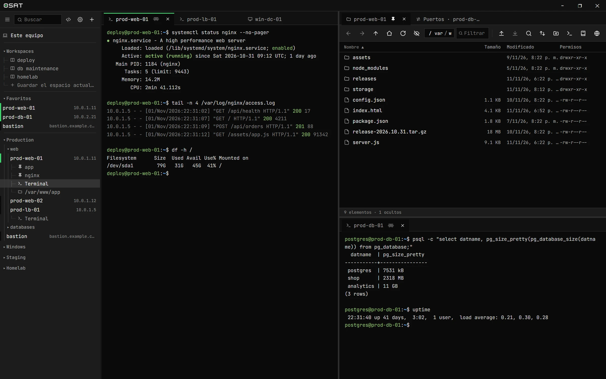
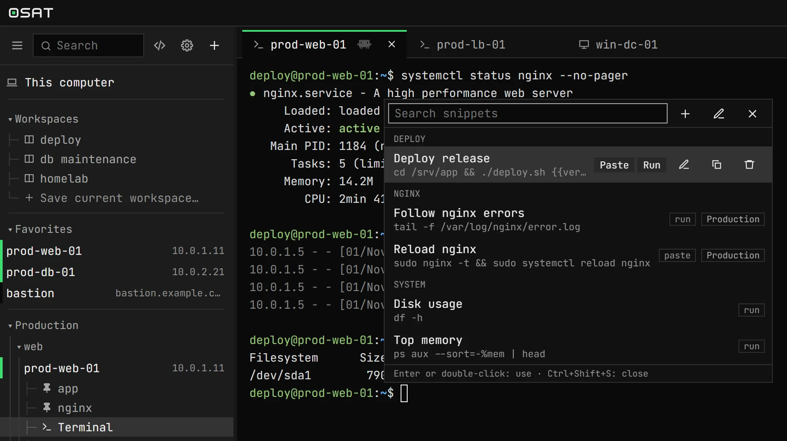
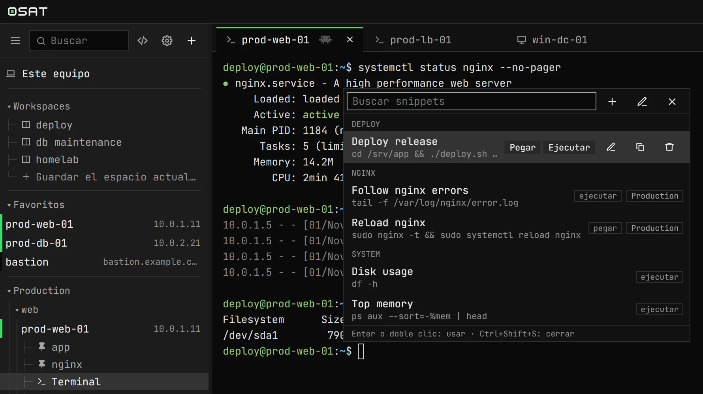
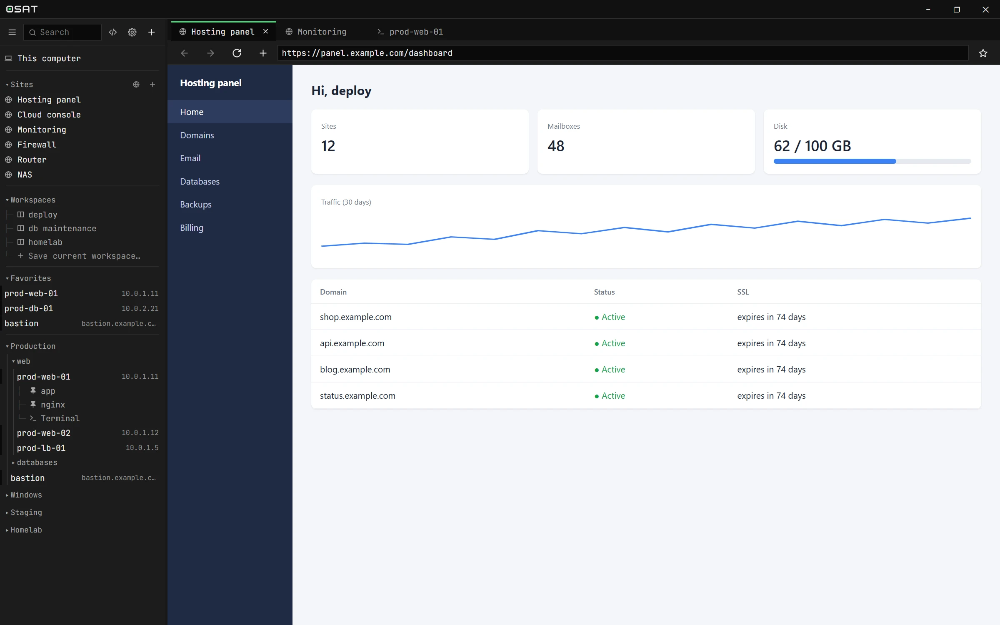
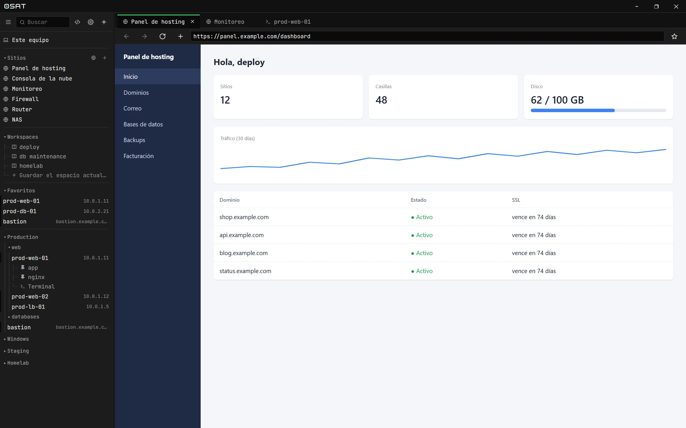
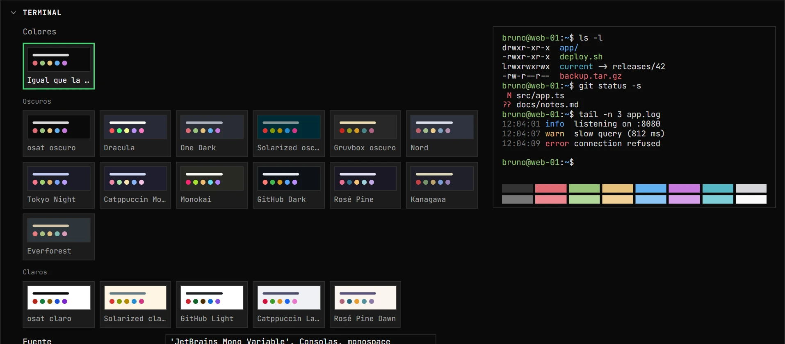

> v1.0 · free and open source> v1.0 · libre y de código abierto
Every remote session. One window.Cada sesión remota. Una sola ventana.
osat puts your SSH terminals, SFTP file transfers and remote desktops (RDP and VNC) side by side, so you can stop juggling PuTTY, WinSCP and mRemoteNG.osat pone tus terminales SSH, tus archivos por SFTP y tus escritorios remotos (RDP y VNC) uno al lado del otro, para que dejes de saltar entre PuTTY, WinSCP y mRemoteNG.
Windows · Linux · macOS · Android (beta) · GPL-3.0-or-later

> features> funciones
Three tools, one appTres programas, una app
One list of servers, one place for passwords, and tabs for everything.Una sola lista de servidores, un solo lugar para las contraseñas y pestañas para todo.
SSH terminalTerminal SSH
Truecolor tabs that open clean, without the MOTD. Passwords, OpenSSH and .ppk keys, certificates and agents. Reconnects on its own when the network drops.Pestañas truecolor que abren limpias, sin el MOTD. Contraseñas, claves OpenSSH y .ppk, certificados y agentes. Se reconecta sola si se cae la red.
SFTP filesArchivos SFTP
Drag files and folders in and out, sync folders like WinSCP, search the server, zip and extract on it, and edit files in place, as root with sudo when you need to.Arrastrá archivos y carpetas, sincronizá carpetas como en WinSCP, buscá en el servidor, comprimí y extraé ahí mismo y editá archivos, también como root con sudo.
Remote desktopEscritorio remoto
Windows RDP and VNC in a tab on every platform, with clipboard, resized to fit. RDP also through an RD Gateway, phone approval included. No system client needed.RDP de Windows y VNC en una pestaña, en todos los sistemas, con portapapeles y ajustados al tamaño. RDP también a través de un RD Gateway, con aprobación en el celular. Sin depender del cliente del sistema.
Port forwardingReenvío de puertos
Local, remote and SOCKS forwards, plus Kubernetes services and pods through the server's kubectl. One-click presets for Postgres, Redis and friends.Reenvíos locales, remotos y SOCKS, y servicios y pods de Kubernetes con el kubectl del servidor. Atajos para Postgres, Redis y compañía.
Tiles and workspacesMosaico y workspaces
Split the window any way you like; moving a tab never drops its session. Save a layout as a workspace and reopen it with one click.Dividí la ventana como quieras; mover una pestaña no corta su sesión. Guardá una distribución como workspace y reabrila con un clic.
Snippets and broadcastSnippets y broadcast
Saved commands with {{variables}}, global or per group. Type into several terminals at once when you need to.Comandos guardados con {{variables}}, globales o por grupo. Escribí en varias terminales a la vez cuando haga falta.
Keyring credentialsCredenciales en el keyring
Passwords live in the system keyring, never in config files. Host keys and RDP certificates are checked, and changes are flagged.Las contraseñas van al almacén del sistema, nunca a un archivo. Se verifican las huellas SSH y los certificados RDP, y se avisa si cambian.
Jump hostsBastiones (ProxyJump)
Reach internal SSH, RDP and VNC servers through a bastion, chained if needed, authenticating from your machine. No keys left on the bastion.Llegá a servidores SSH, RDP y VNC internos a través de un bastión, encadenando saltos si hace falta y autenticando desde tu PC. Sin dejar claves en el bastión.
Claude MCP
A local MCP server that lets Claude Code read and type into the terminals you choose to share, one by one. Nothing to install on your servers.Un servidor MCP local para que Claude Code lea y escriba en las terminales que elijas compartir, de a una. Nada que instalar en los servidores.
Websites and browserSitios web y navegador
Keep your hosting and cloud panels next to your servers, with your login saved. Preview a server's ports or HTML files through SSH, without opening anything to the network.Tené tus paneles de hosting y de la nube al lado de los servidores, con el login guardado. Mirá los puertos de un servidor o sus archivos HTML a través de SSH, sin abrir nada a la red.
Lock screenBloqueo con contraseña
Optionally, osat asks for a password when it opens and after some idle minutes, or Windows Hello. Your sessions keep running behind the lock screen.Si querés, osat pide una contraseña al abrirse y después de unos minutos sin uso, o Windows Hello. Tus sesiones siguen andando detrás de la pantalla de bloqueo.
Updates itselfSe actualiza sola
When a new version is out, osat shows what's in it and installs it with one click, then opens again updated. You can turn the check off in Settings.Cuando sale una versión nueva, osat te muestra qué trae y la instala con un clic; después se vuelve a abrir actualizada. La búsqueda se apaga desde Ajustes.
> snippets> snippets
The commands you type every day, one keystroke awayLos comandos de todos los días, a una tecla
Press Ctrl+Shift+S in any terminal to search your snippets. Paste one to review it, or run it straight away.Apretá Ctrl+Shift+S en cualquier terminal para buscar tus snippets. Pegalo para revisarlo o ejecutalo directo.
Multi-line commands and {{variables}} osat asks forComandos de varias líneas y {{variables}} que osat pregunta
Global, or scoped to a group of serversGlobales o solo para un grupo de servidores
Run in every terminal of a broadcastEjecutalos en todas las terminales de un broadcast


> websites> sitios web
All your admin panels, next to your serversTodos tus paneles de administración, al lado de tus servidores
Save the web consoles you manage — hosting, cloud, monitoring, firewall, router, NAS — and open them in a tab, right beside your terminals. Everything you administer, reachable from one place.Guardá las consolas web que administrás —hosting, nube, monitoreo, firewall, router, NAS— y abrilas en una pestaña, al lado de tus terminales. Todo lo que administrás, a mano en un solo lugar.
Your logins stay saved between restartsTus logins quedan guardados entre reinicios
A real browser in a tab, next to SSH, SFTP and remote desktopsUn navegador de verdad en una pestaña, junto a SSH, SFTP y escritorios remotos
Add, reorder and search them in the sidebarAgregalos, ordenalos y buscalos en la barra lateral


> make it yours> a tu gusto
18 themes and a terminal to your taste18 temas y una terminal a tu gusto
Dark or light themes for the app and the terminal, plus font, cursor and bell. Applied instantly, in English or Spanish.Temas oscuros o claros para la app y la terminal, y fuente, cursor y campana. Se aplican al instante, en español o en inglés.

Bring your sessions with youTraé tus sesiones
Import hosts, users, keys and folders from the tools you already use. Passwords stay out of it: osat asks once, then keeps them in your keyring. Move everything to another machine with an encrypted .osat file.Importá servidores, usuarios, claves y carpetas de lo que ya usás. Las contraseñas no: osat las pide una vez y las guarda en el keyring. Pasá todo a otra PC con un archivo .osat cifrado.
PuTTYWinSCPmRemoteNGOpenSSH
> platforms> plataformas
Runs where you workFunciona donde trabajás
Windows
Windows 10 and 11. Passwords in Credential Manager. Local PowerShell, cmd, WSL and Git Bash terminals.Windows 10 y 11. Contraseñas en el Administrador de credenciales. Terminales locales de PowerShell, cmd, WSL y Git Bash.
Linux
GTK 3 and WebKitGTK 4.1. Passwords in the Secret Service (GNOME Keyring, KWallet). Your login shell next to the servers.GTK 3 y WebKitGTK 4.1. Contraseñas en el Secret Service (GNOME Keyring, KWallet). Tu shell al lado de los servidores.
macOS
Universal build for Apple silicon and Intel. Passwords in the Keychain, ⌘ shortcuts throughout.Build universal para Apple silicon e Intel. Contraseñas en el Llavero y atajos con ⌘.
Android beta
SSH terminal and SFTP, one screen at a time, with a key bar for Ctrl, Alt, Esc and arrows. Built from source for now.Terminal SSH y SFTP, de a una pantalla, con barra de teclas para Ctrl, Alt, Esc y flechas. Por ahora se compila desde el código.
Stop juggling between tools.Dejá de saltar entre programas.
osat is free software under the GPL-3.0. Download a release, or build it yourself with Go and Wails.osat es software libre bajo GPL-3.0. Descargá una versión o compilalo vos con Go y Wails.